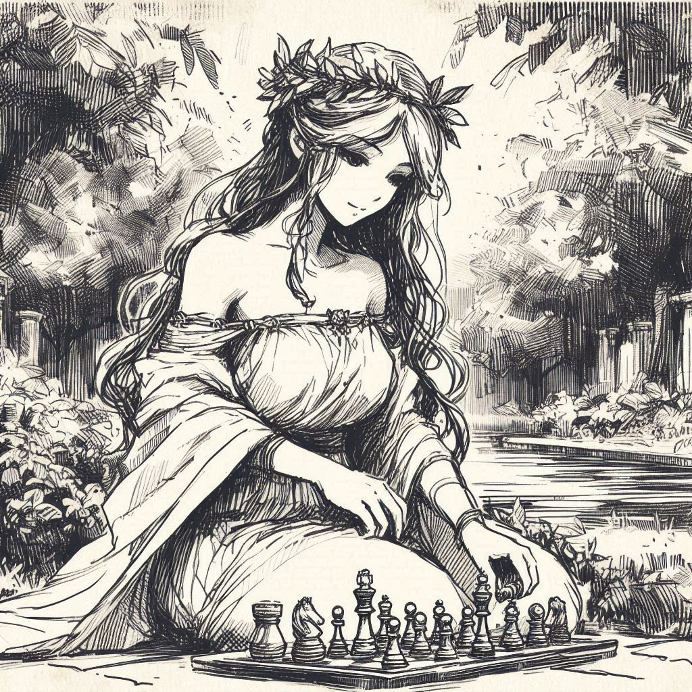

國際象棋規則
國際象棋，常被稱為棋之王，是一種結合思考、預測與創造力的千年戰略遊戲。
遊戲目標
國際象棋的目標是將對手的國王將死。這意味著將敵方國王置於被吃子威脅（將軍）且無法通過任何移動來解除此威脅的位置。
棋盤設置
- 國際象棋棋盤由64個交替的淺色和深色方格組成，形成8×8的網格。
- 每位玩家開始時擁有16個棋子：一個國王、一個皇后、兩個城堡、兩個騎士、兩個主教和八個兵。
- 初始排列是將兵擺在每位玩家前方的第二列，其他棋子按特定順序擺在第一列。
- 棋盤的擺放方向應使每位玩家右下角是白色方格。
棋子走法
-
每種類型的棋子都有特定的走法規則：
- 國王可以向任何方向移動一格。
- 皇后可以向所有方向移動任意格數：水平、垂直或對角線。
- 城堡可以水平或垂直移動任意格數。
- 騎士以「L」形走法移動：一個方向（水平或垂直）移動兩格，然後垂直於該方向移動一格。
- 主教可以沿對角線移動任意格數。
- 兵向前移動一格，但在首次移動時可以選擇前進兩格。兵吃子時是向前對角線移動一格。
- 棋子不能穿過其他棋子移動，騎士除外，騎士可以跳過其他棋子。
- 如果一個棋子移動到對手棋子所在的方格，後者會被吃掉並從棋盤上移除。
特殊走法
- 王車易位
- 如果國王和相關的城堡都尚未移動過，且它們之間沒有其他棋子，國王可以向城堡方向移動兩格，然後城堡跳過國王到相鄰的方格。這個特殊走法可以讓國王安全的同時啟用城堡。
- 吃過路兵
- 如果一個兵從起始位置前進兩格，落在對手兵的旁邊，後者有選擇吃掉它的機會，就像它只前進了一格一樣。這種吃子必須在兵移動兩格後立即進行，否則機會將會喪失。
- 兵的升變
- 當一個兵到達最後一列（棋盤的對面邊緣）時，它可以升變並轉變為同顏色的任何其他棋子（除了國王），通常會選擇皇后以最大化其價值。
將軍與將死
- 當國王受到對手棋子吃子的威脅時，稱為被將軍。玩家必須進行一步能夠消除這種威脅的移動。
- 將死發生在國王被將軍且沒有合法移動可以消除這種威脅時。國王被將死的玩家輸掉遊戲。
逼和與和局
- 逼和發生在輪到某玩家行動但沒有合法移動可行，且其國王未被將軍的情況。在這種情況下，遊戲宣告和局（平局）。
- 因棋子不足造成的和局：如果雙方都沒有足夠的棋子來迫使將死（例如，國王對國王，國王加主教對國王），遊戲為和局。
- 因重複造成的和局：如果相同的局面出現三次，且輪到同一玩家行動並有相同的移動可能性，遊戲宣告和局。
遊戲結束
- 遊戲可以通過將死、逼和、或玩家之間的協議和局、棋子不足或三次重複而結束。
- 如果一位玩家無法進行合法移動（通常稱為
死局
），遊戲結束。
國際象棋在藝術與文學中
國際象棋擁有與藝術和文學交織的豐富歷史。 兩部特別突出的作品是：
Scacchi ludus
（1527年）由馬可·吉羅拉莫·維達（Marco Girolamo Vida）創作- 這首詩描述了奧林匹斯山上眾神之間的象棋對弈。其美麗吸引了讀者的注意，啟發了後來的作品，如揚·科查諾夫斯基（Jan Kochanowski）的
象棋
詩。 凱薩：或象棋遊戲
（1772年）由威廉·瓊斯（William Jones）創作- 這首詩引入了凱薩（Caïssa），一個代表象棋精神的神話人物，自此成為了這個遊戲的繆斯。
這些作品對象棋文化產生了持久的影響。
它們在文學、棋局分析，甚至藝術中都有所引用。Scacchi ludus
和凱薩都是象棋文化遺產的重要組成部分。
